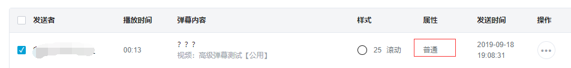
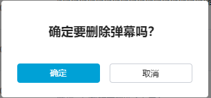
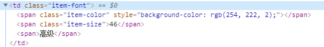
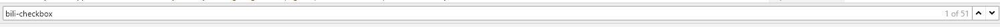
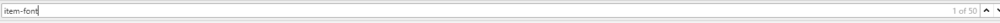
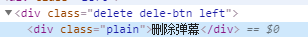
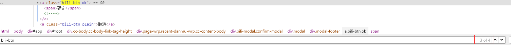
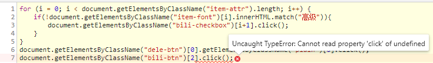

事情的起因是在b站投稿了一个高级弹幕测试的视频（av9940487），但是由于b站的弹幕池机制是新的弹幕顶掉旧的弹幕，所以导致一些人发的高级弹幕很快就被顶掉了。
所以就想着写个脚本来自动删除属性为普通的弹幕，语言用的是javascript，在chrome的控制台就可以执行这个脚本。
判断弹幕A是否为普通弹幕，是则选中。

点击删除弹幕的按钮，弹出二次确认框。

点击确定，成功删除。

可通过判断class属性为"item-front"的标签里是否包含“高级”两个字来决定是否勾选该弹幕：
document.getElementsByClassName("item-font")[i].innerHTML.match("高级")getElementsByClassName("bili-checkbox")[i+1].click()这里i+1是由于有其他标签也使用了“bili-checkbox”属性。



用click函数触发点击“删除弹幕”按钮的操作：
document.getElementsByClassName("dele-btn")[0].getElementsByClassName("plain")[0].click();
点击二次确认框：
document.getElementsByClassName("bili-btn")[2].click();for (i = 0; i < document.getElementsByClassName("item-attr").length; i++) {
if(!document.getElementsByClassName("item-font")[i].innerHTML.match("高级")){
document.getElementsByClassName("bili-checkbox")[i+1].click();
}
}
document.getElementsByClassName("dele-btn")[0].getElementsByClassName("plain")[0].click();
document.getElementsByClassName("bili-btn")[2].click();但是由于控制台执行js的代码速度过快，会导致在执行到第7行代码的时候，class属性为“bili-btn”的第3个标签还没加载出来，所以要在执行第7个语句之前让其停顿一下。

利用setTimeout()方法可实现延迟执行
setTimeout(function () {document.getElementsByClassName("bili-btn")[2].click(); }, 1000);或
setTimeout("document.getElementsByClassName(\"bili-btn\")[2].click()",1000);至此，只实现了单页面的批量删除1次，但是我们知道，假设弹幕有N页，就必须让以上代码不断运行，直到第x页不包含普通弹幕，然后跳转至第x+1页继续执行以上删除代码。
结合另一篇文章即可实现：https://www.cnblogs.com/wujiecong/p/11549738.html
var timeout = prompt("设置刷新时间");
var current = location.href;
var page = 0;
var count = 0;
if(timeout > 0)
{
setTimeout('reload()', 1000 * timeout);
}
else
{
location.replace(current);
}
function reload()
{
setTimeout('reload()', 1000 * timeout);
if(count<10){
const regex = /pn=(\d+)/;
page = page +1;
current = current.replace(regex,"pn="+page.toString())
}
var frame = '<frameset cols=\'*\'>\n<frame src=\'' + current + '\' /></frameset>';
with(document)
{
// 引用document对象，调用write方法写入框架，打开新窗口
write(frame);
setTimeout(function(){
count = 0
getFrames = window.frames["0"]
for (i = 0; i < getFrames.document.getElementsByClassName("item-attr").length; i++) {
if(!getFrames.document.getElementsByClassName("item-font")[i].innerHTML.match("高级")){
getFrames.document.getElementsByClassName("bili-checkbox")[i+1].click();
count = count +1;
}
}
if(count>0){
getFrames.document.getElementsByClassName("dele-btn")[0].getElementsByClassName("plain")[0].click();
setTimeout(function () {
getFrames.document.getElementsByClassName("bili-btn")[2].click();
}, 1000);
}},2000);
// 关闭上面的窗口
void(close());
};
}